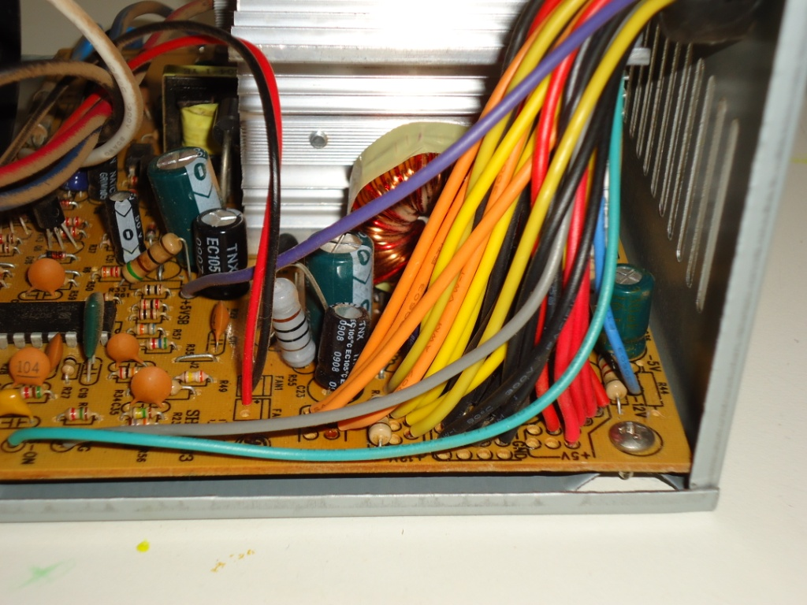
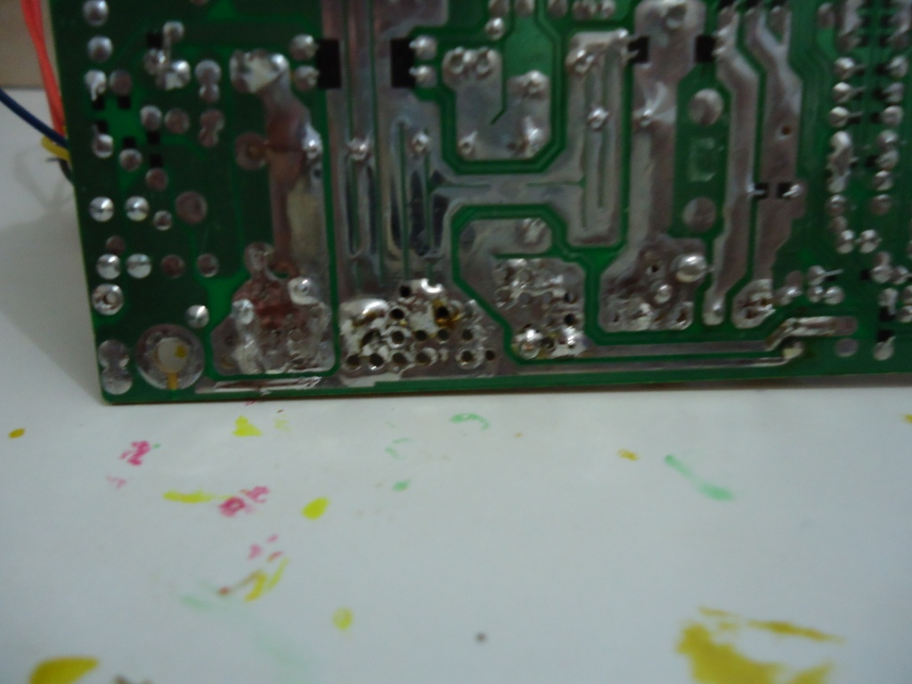
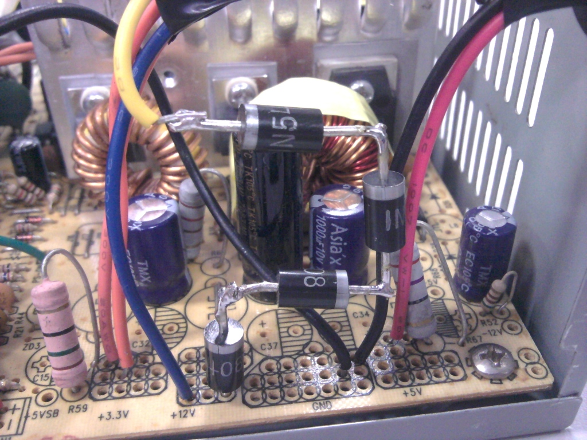
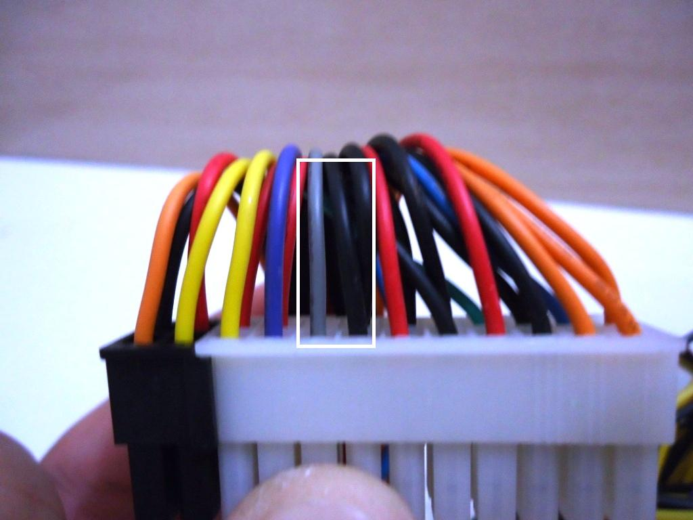
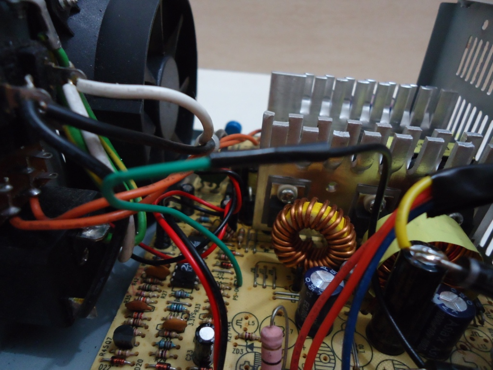
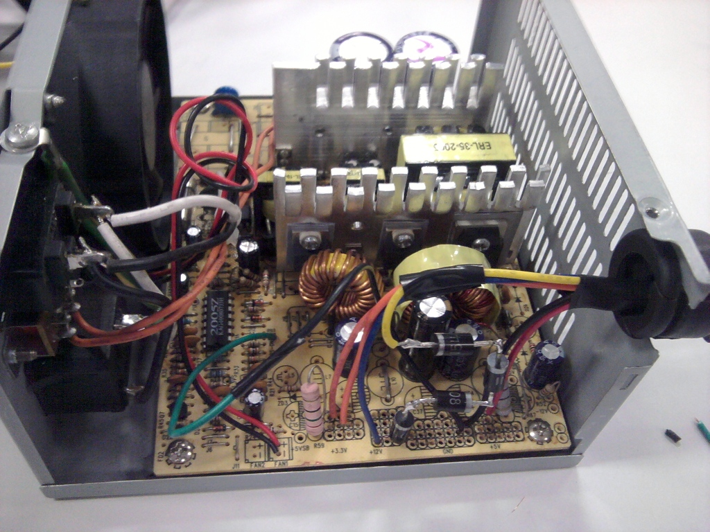

Como adaptar uma fonte de PC para uso em video games
 :::. Por Gigacom - Acredito que um dos maiores pesadelos de quem coleciona video games antigos é de um dia ter a fonte de um deles irreversivelmente queimada. Fontes originais são caras e difíceis de se encontrar. Para video games menos comum, é quase impossivel encontrar uma fonte, as vezes só comprando um outro conjunto do video game é que se consegue a bendita. Nesse tutorial, ensinarei como adaptar uma fonte de PC para uso nos mais variados video games, você irá se surpreender pela forma como uma fonte dessas pode ser usada para dar vida aos antigos consoles. O texto é longo, então tenha paciência...
:::. Por Gigacom - Acredito que um dos maiores pesadelos de quem coleciona video games antigos é de um dia ter a fonte de um deles irreversivelmente queimada. Fontes originais são caras e difíceis de se encontrar. Para video games menos comum, é quase impossivel encontrar uma fonte, as vezes só comprando um outro conjunto do video game é que se consegue a bendita. Nesse tutorial, ensinarei como adaptar uma fonte de PC para uso nos mais variados video games, você irá se surpreender pela forma como uma fonte dessas pode ser usada para dar vida aos antigos consoles. O texto é longo, então tenha paciência...
_____________________________________________________________________
Conceito
Os video games são, em sua essência, pequenos computadores. Alguns dos mais antigos foram baseados em sistemas já vendidos e conhecidos no mercado, como é o caso do Master System que recebeu grande influência dos micros MSX. Outros receberam componentes largamente usados na informática de seus dias, como o Mega Drive e Neo Geo, que usavam o processador da Motorola M68000 que também era usado no famoso Mac da Apple.
Não só os processadores centrais eram de uso comum em video games e computadores, muitos outros componentes também estavam presentes nesses dois mundos: chips de video e áudio, decodificadores, memórias, slots para a entrada de cartuchos etc. Graças a isso, as voltagens de operação que os componentes de um video game trabalham são semelhantes as usadas pelos micros de suas épocas.
Os video games da década de 80 operam normalmente usando apenas uma determinada voltagem (geralmente 9V). Video games do inicio da década de 90 já apresentam algumas variações, com alimentação composta (12V e 5V) enquanto que aqueles que foram projetados um pouco depois da metade do inicio dessa década, apresentam uma alimentação igual à dos PCs (12V, 5V, 3.3V).
Uma fonte de PC atual pode causar espanto para algumas pessoas. A primeira vista, aquilo não passa de um emaranhado infernal de fios multicoloridos com os plugues e conectores mais variados possíveis. A boa noticia é que esse negocio não é assim tão bizarro quanto parece... em uma fonte de PC normal, dessas baratinhas de R$ 30,00 mesmo, já temos absolutamente tudo aquilo que precisamos para fazer funcionar na pratica, TODOS OS CONSOLES ANTIGOS! Todos mesmo, de todas as nacionalidades: Genesis, Mega Drive, Master System americano e nacional, Super Nintendo, NES, Nes clones (Phantom System, Turbo Game, Polystation...), Neo Geo, Neo Geo CD, Saturn, Playstation, Dreamcast, Nintendo 64, Sega CD, CDX... enfim, praticamente todos. Como isso é possível? Bem, como disse, as especificações das fontes de alimentação desses consoles tendem a ser semelhantes ou até iguais aos computadores de suas épocas, e como uma fonte de PC tem praticamente todas as voltagens usadas nesses consoles, não fica difícil adaptar uma fonte dessas que é fácil fácil de se adquirir e não custa caro.
Qual fonte usar?
Fontes de PC tem lá suas variações. Se você for numa loja de informática e pedir uma fonte, é muito provável que lhe façam uma enxurrada de perguntas para saber qual tipo mais especificamente você precisa. Trocando em miúdos, fonte de PC é fonte de PC e pronto. O que varia nelas é uma ou outra conexão e a potência de saída, mas basta saber que a fonte mais simples e mais baratinha do mercado vai lhe servir perfeitamente bem para esse projeto. Não se preocupe se a fonte tem em suas especificações a potência máxima real em não-sei-tantos Watts, muito menos se preocupe se ela tem 10 saídas SATA ou qualquer coisa do tipo. Uma fonte de PC baratinha, de boa qualidade já servirá.
Entendendo a fonte
Como disse, uma fonte de PC comum trabalha com várias voltagens, sendo que as que desejamos utilizar serão as saídas de 12V, 5V, 3.3V e o terra da fonte. As fontes seguem um determinado padrão, daí fica mais ou menos fácil determinar qual é a voltagem de cada fio pela cor. Por exemplo: amarelo = 12V, vermelho = 5V, alaranjado = 3.3, preto = terra. Porém as fontes têm uma infinidade de fios com essas cores, o que pode causar confusão. Mas relaxe, todos eles saem de um mesmo lugar, mais a frente falo sobre isso.
Outra coisa, as fontes de PC não têm um botãozinho de liga-desliga. Elas são acionadas quando um terminado fio entra em contato com o terra, se desligam automaticamente quando esse contato é interrompido ou quando a fonte entra em curto. Quando um desses dois eventos ocorre, a fonte simplesmente desarma e desliga, portanto não é preciso ficar com medo de torrar a fonte caso sem querer você encoste um fio amarelo no vermelho quando ela estiver ligada. Ela simplesmente irá desligar, daí é só preciso desconectar todos os fios, tirar a fonte da tomada e ligá-la de novo.
Você também irá notar que toda fonte de PC tem um ventilador. Esse ventilador é costumeiramente chamado de cooler. A função dele obviamente é arrefecer a fonte (resfriar no jargão popular), mantendo um fluxo de ar constante em seus dissipadores internos. Se esse fluxo de ar é interrompido, daí temos um problema... portanto, é primordial fazer com que a fonte sempre esteja em condições ideais de arrefecimento, não tampando as suas entradas de ar e certificando sempre se o cooler está funcionando. Ah! Detalhe: a velocidade da ventilação aumenta conforme se exige mais potência da fonte. Em um computador nota-se isso principalmente quando se está rodando algum joguinho pesado, mas quando se liga um video game nessas fontes... cara, normalmente o ventilador gira na rotação mais baixa .
.
Fios, fios, fiiiiiiiiiiiooooooooooos ! Quais usar?
! Quais usar?
Ta achando que essa fonte tem muitos fios? Não se desespere. Na verdade é só um punhado deles que iremos usar, o resto será impiedosamente cortado. Cada grupo de fios de determinada cor, sai de um mesmo ponto, sendo assim, os amarelos todos saem de um determinado local da placa da fonte, os vermelhos, pretos e outros da mesma forma. Mas antes de se cortar ou tirar os fios a esmo, é preciso ter em mente quais e quantos deles serão usados.
Por exemplo, você irá usar a fonte de PC no seu querido Master System da Tec Toy? Então vai precisar de pelo menos 5 fios da fonte: um amarelo, vermelho e preto para ligar o Master, e um verde e um preto para ligar e desligar a fonte. Vai usar no seu Super Nintendo? Então 4 fios serão usados, o amarelo (com adaptação, continue lendo) e o preto para o SNES e o verde e o preto para ligar e desligar a fonte. Todavia, é possível preparar a fonte de PC para servir como uma fonte universal para video games, preparada para ligar qualquer console. Basta saber como se conectar os fios da fonte no video game. Mais a frente eu falo sobre isso.
Então, na minha fonte deixei disponíveis os fios na seguinte quantidade:
2 Pretos (terra)
2 Amarelos (12V)
1 Vermelho (5V)
2 Alaranjados (3.3V)
Isso me basta para ligar eventualmente qualquer um dos meus video games (tantos que as vezes até esqueço o que tenho ). Você tambem pode adotar essa mesma proporção, o chato é que tooooda vez que precisar ligar algum console diferente, terá que emendar de novo os fios que serão usados, daí talvez seja mais vantajoso para você deixar mais alguns fios disponiveis para conectar à vários consoles ao mesmo tempo. Ah sim, esqueci de falar, mas com uma fonte dessas dá pra ligar uns 5 video games ao mesmo tempo ou até mais
). Você tambem pode adotar essa mesma proporção, o chato é que tooooda vez que precisar ligar algum console diferente, terá que emendar de novo os fios que serão usados, daí talvez seja mais vantajoso para você deixar mais alguns fios disponiveis para conectar à vários consoles ao mesmo tempo. Ah sim, esqueci de falar, mas com uma fonte dessas dá pra ligar uns 5 video games ao mesmo tempo ou até mais  .
.
Enfim, agora que você já entendeu mais ou menos como funciona uma fonte de PC e o que dá para fazer com ela, vamos à gambiarra propriamente dita.
Preparando a fonte e os materiais
Para fazer um serviço bem feito e com cara de gente, você vai precisar dos seguintes itens:
Ferro de solda e estanho para solda
Fita isolante
4 resistores de 1,5A
Uma fonte de PC (óbvio né)
E um santinho da sua preferência para dar sorte
REGRINHA DE OURO: lembre-se de toda vez que você for meter a mão dentro da fonte ou fazer alguma coisa dentro dela, tenha certeza de que a maldita esteja desligada da tomada! Colocar a mão em qualquer coisa ali dentro mesmo com a fonte desligada mas conectada na tomada, é certeza de choque, e dos grandes!
E mais um detalhe importantíssimo, toda vez que for ligar a fonte na tomada, faça isso com ela devidamente montada em sua caixa metálica!
Tenha bastante cuidado ok? Não falo isso para botar medo, mas apenas para evitar que você se machuque ou ocorra algum acidente.
Nem todos os fios da fonte serão usados, na verdade só um punhado deles é que servirão, que são:
1 Amarelo (12V)
1 Vermelho (5V)
1 Alaranjado (3.3V)
2 Pretos (Terra)
1 Azul
1 Verde
Com essa configuração vai dar para usar a fonte em vários video games sem problema algum. Quando você abrir a fonte encontrará algo assim:

Doidera né? Apesar desse espaguete de fios, a maioria das fontes felizmente saem de fábrica com indicações informando a que grupo de voltagem pertecem os fios. Na foto acima dá para ver que na placa tem escrito +5V onde estão alguns fios vermelhos e GND (ground/terra) onde estão os fios pretos. Os grupos de fios estão todos juntos, então fica facil separar e tirar os fios que serão usados. Então, vamos ao primeiro passo:
1º Passo
Dessolde todos os fios amarelos, pretos, vermelhos e alaranjados. Para isso, desparafuse a placa da fonte da caixa metálica, e com o ferro de solda vá derretendo a solda que segura os grupos de fios.

A foto acima mostra a parte de baixo de uma fonte, aqueles buraquinhos são de onde estavam um grupo de fios preto. Se você notar com atenção, perceberá que ha uma trilha bem larga ali para todos os fios pretos, e outras três trilhas tambem bem largas, uma para os fios amarelos, outra para os vermelhos e mais uma para os alaranjados. Na hora que você for tirar os fios, não se preocupe se ficar solda em cima dos buracos, o importante é que não haja solda unindo trilhas diferentes, ou seja, não pode ter solda unindo a trilha dos fios pretos a trilha dos amarelos/vermelhos/alaranjados e vice versa.
2º Passo
Agora que você tirou o excesso de fios, separe 1 de cada cor e 2 pretos, e ressolde-os na placa da fonte, em seus respectivos lugares: amarelos no grupo de 12V, vermelhos no de 5V, alaranjados no de 3.3 e pretos no grupo GND/ground/terra.
3 º Passo
Para ligar um video game que usa voltagem de 9V, será preciso fazer uma adaptação na fonte de PC. Pegue os 4 resistores, e ligue-os em série, em seguida solde uma das pontas dele na fonte e a outra em um fio de cor azul:

Bem... na foto acima tem um fio azul ligado direto na fonte e um amarelo na outra ponta do resistor, sem falar que tem um vermelho ali no grupo de 3.3V... confeso que tá meio zuado, é que na correria a minha fonte ficou desse jeito Mas façam como eu digo crianças, não façam como eu faço
Mas façam como eu digo crianças, não façam como eu faço . A foto é só para ilustrar e dar uma ideia de como ligar os resistores em serie na placa da fonte
. A foto é só para ilustrar e dar uma ideia de como ligar os resistores em serie na placa da fonte  . Continuando...
. Continuando...
Os resistores fazem com que os 12V caiam para 9V. Você pode usar um multimetro para medir e confimar se a voltagem caiu para a casa dos 9V, mas lembre-se que com a fonte ligada porém desconectada de qualquer aparelho, a medida sempre será um pouco maior que a saída nominal que desejamos. Isso é normal, pois quando algum dispositivo é conectado na fonte a tendência é que a voltagem caia e se estabilize na voltagem nominal. Ou seja: com a fonte ligada mas desconectada do video game a saída de 9V deverá alcançar um valor um pouco maior (9,5V, 9,4V...) e conectada a um video game a voltagem ficará na casa dos 9V (9,0V-9,3V no máximo). Isso não prejudica o video game.
4º Passo
Agora vem a mágica. É preciso configurar a fonte de modo que ela sempre ligue quanto for conectada a tomada. Em um laboratório de informática, alguns técnicos usam de um artificio simples porém eficiente para identificar se uma fonte está ou não funcionando. Eles pegam a fonte, conectam ela na tomada, e com um grampo ou clip, unem dois fios do conector principal para ligar a fonte:

Esses fios são o verde e o preto em destaque na foto. Porém como tiramos esses conectores lá no primeiro passo, teremos que fazer a união desses fios dentro da fonte. O fio verde na placa da fonte normalmente fica bem isolado dos demais fios. Basta você pegar ele e uni-lo à um dos fios pretos dessa forma:

5º Passo
O resultado final de todo esse trabalho deverá ficar mais ou menos assim:

Agora uma informação importante: resistores esquentam, e muito! Como os resistores usados ali para baixar a tensão de um fio de 12V para 9V ficam meio expostos e sujeitos a encostarem na lateral da fonte quando ela for fechada, é preciso garantir que eles não entrem em contato direto com a lateral da fonte. Para isso, pegue alguns pedaços de fita isolante e colea-as dentro daquela peça que cobre a fonte, de modo a cobrir a região onde os resistores ficarão ao lado dessa peça. Procure tambem fazer com que os fios que você separou ali dentro não encostem nos componentes da fonte. Por fim feche a fonte.
6º Passo
Por ultimo, resta ligar os fios no seu video game. Cada video game tem seu jeito de ser ligado, o seu plugue e por aí vai. O legal é aproveitar os cabos das fontes originais e uni-los à essa fonte. Normalmente não tem mistério, as fontes dos video games usualmente vem com informações que indicam a polaridade da saida de seus conectores e quais voltagens usam. Eu acredito que se você for capaz de montar essa fonte não terá dificuldade de ligar um cabo à ela e usar no video game A dica aqui é usar um multimetro para medir a polaridade e voltagem de cada conector conforme se liga eles à fonte, assim fica facil saber onde os fios dos cabos das fontes originais devem ser ligados nos fios dessa fonte.
A dica aqui é usar um multimetro para medir a polaridade e voltagem de cada conector conforme se liga eles à fonte, assim fica facil saber onde os fios dos cabos das fontes originais devem ser ligados nos fios dessa fonte.
Conclusão
Parece que fazer isso tudo aí dá trabalho mas acreditem: é simples, rápido e muito prático. Como disse láááá no inicio, essa fonte pode ser usada praticamente para ligar qualquer video game. Já a usei para ligar Mega Drive, Master System, Neo Geo CD e até um Game Boy. Sei que muita gente pode acabar tendo duvidas, ou dificuldade para ligar, mas daí não precisam se acanhar, só passar lá no Trombone e deixar uma mensagem que lhes ajudo.
Acesse o Trombone e comente sobre essa matéria!


O Master System 3 foi mais fatiado que carne de segunda antes de ser moída... tiraram o suporte ao óculos 3D, colocaram uma travinha meio vagabunda para servir de liga/desliga, sumiram com o botão reset e com as saídas A/V... ...